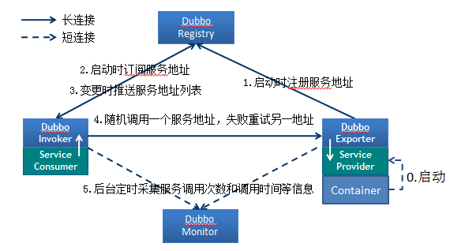

Dubbo简介
Dubbo 是一个分布式服务框架，是阿里巴巴开源项目 ，被国内电商及互联网项目中使用。
Dubbo 致力于提供高性能和透明化的RPC远程服务调用方案，以及SOA服务治理方案。简单的说，Dubbo就是个服务框架，如果没有分布式的需求，其实是不需要用的，只有在分布式的时候，才有Dubbo这样的分布式服务框架的需求，并且本质上是个服务调用的东东，说白了就是个远程服务调用的分布式框架。

1.1 节点角色说明
- Provider: 暴露服务的服务提供方。
- Consumer: 调用远程服务的服务消费方。
- Registry: 服务注册与发现的注册中心。
- Monitor: 统计服务的调用次调和调用时间的监控中心。
- Container: 服务运行容器。
1.2 调用关系说明
- 服务容器负责启动，加载，运行服务提供者。
- 服务提供者在启动时，向注册中心注册自己提供的服务。
- 服务消费者在启动时，向注册中心订阅自己所需的服务。
- 注册中心返回服务提供者地址列表给消费者，如果有变更，注册中心将基于长连接推送变更数据给消费者。
- 服务消费者，从提供者地址列表中，基于软负载均衡算法，选一台提供者进行调用，如果调用失败，再选另一台调用。
- 服务消费者和提供者，在内存中累计调用次数和调用时间，定时每分钟发送一次统计数据到监控中心。